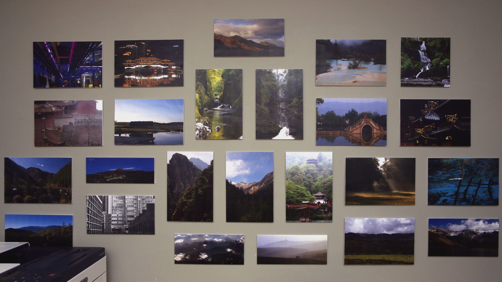

<figure property="image" vocab="http://schema.org/" typeof="ImageObject">
<link rel="license" property="license" href="https://spdx.org/licenses/CC-BY-NC-ND-4.0.html">
<meta property="acquireLicensePage" content="https://petermolnar.net">
<meta property="name" content="wales-troll-of-the-mine">

</figure>
<map name="image-map">
<area title="Eastern Suburb Memory" href="https://petermolnar.net/photo/chengdu-eastern-suburb-memory-5/index.html" coords="185,349,421,192" shape="rect">
<area title="Anshun Bridge, Chengdu (closeup)" href="https://petermolnar.net/photo/chengdu-anshun-bridge-closeup/index.html" coords="456,349,694,190" shape="rect">
<area title="Beddgelert" href="https://petermolnar.net/photo/beddgelert/index.html" coords="787,254,1025,127" shape="rect">
<area title="Huanglong" href="https://petermolnar.net/photo/huanglong-ponds/index.html" coords="1118,342,1356,191" shape="rect">
<area title="Lumsdale Falls" href="https://petermolnar.net/photo/lumsdale-falls/index.html" coords="1394,349,1564,186" shape="rect">
<area title="Elephant Bathing Pool - Xixiangchi Monastery" href="https://petermolnar.net/photo/elephant-bathing-pool-xixiangchi-monastery/index.html" coords="185,546,419,388" shape="rect">
<area title="Dawn at Dojo Stara Wieś" href="https://petermolnar.net/photo/dawn-at-dojo-stara-wies/index.html" coords="456,539,696,388" shape="rect">
<area title="Fairy Glen" href="https://petermolnar.net/photo/fairy-glen/index.html" coords="731,294,887,528" shape="rect">
<area title="The lake on the rear peak of Mount Qingcheng" href="https://petermolnar.net/photo/mount-qingcheng-the-lake-after-the-long-bridge/index.html" coords="923,522,1080,292" shape="rect">
<area title="Hongcun bridge closeup" href="https://petermolnar.net/photo/hongcun-bridge-2/index.html" coords="1117,542,1353,388" shape="rect">
<area title="Golden Dragons" href="https://petermolnar.net/photo/golden-dragons/index.html" coords="1393,543,1628,387" shape="rect">
<area title="Nuorilang Waterfall in Jiuzhaigou" href="https://petermolnar.net/photo/sichuan-waterfalls-nuorilang-waterfall/index.html" coords="83,734,315,576" shape="rect">
<area title="La Palma - Teneguía" href="https://petermolnar.net/photo/la-palma-teneguia-volcano/index.html" coords="361,668,599,579" shape="rect">
<area title="Huangshan scenery 3" href="https://petermolnar.net/photo/huangshan-scenery-3/index.html" coords="638,792,794,556" shape="rect">
<area title="Sichuan mountains - a view from Jiuzhaigou Primeval Forest" href="https://petermolnar.net/photo/sichuan-mountains-jiuzhaigou-view/index.html" coords="828,792,984,560" shape="rect">
<area title="Anshun Bridge" href="https://petermolnar.net/photo/anlan-bridge/index.html" coords="1019,792,1178,558" shape="rect">
<area title="Sunrise - Hungarian National Graveyard" href="https://petermolnar.net/photo/sunrise-hungarian-national-graveyard/index.html" coords="1213,734,1448,579" shape="rect">
<area title="Jiuzhaigou: Peacock Riverbed" href="https://petermolnar.net/photo/jiuzhaigou-peacock-riverbed/index.html" coords="1486,579,1716,739" shape="rect">
<area title="La Palma - volcano route next to Enríque" href="https://petermolnar.net/photo/la-palma-volcano-route-enrique/index.html" coords="85,865,319,770" shape="rect">
<area title="A view from Barbican" href="https://petermolnar.net/photo/a-view-from-barbican/index.html" coords="361,834,599,704" shape="rect">
<area title="Up in the Sky 1" href="https://petermolnar.net/photo/up-in-the-sky-1/index.html" coords="656,931,890,827" shape="rect">
<area title="Hills from Beachy Head" href="https://petermolnar.net/photo/hills-from-beachy-head/index.html" coords="929,931,1165,832" shape="rect">
<area title="Snowdonia" href="https://petermolnar.net/photo/snowdonia/index.html" coords="1216,932,1448,778" shape="rect">
<area title="Llyn Idwal" href="https://petermolnar.net/photo/llyn-idwal/index.html" coords="1489,902,1720,778" shape="rect">
</map>
<script>function mapResizer(maps) {if (!maps) {maps = document.getElementsByTagName('map');}for (const map of maps) {map.img = document.querySelectorAll(`[usemap="#${map.name}"]`)[0];map.areas = map.getElementsByTagName('area');for (const area of map.areas) {area.coordArr = area.coords.split(',');}}function resizeMaps() {for (const map of maps) {const scale = map.img.offsetWidth / (map.img.naturalWidth || map.img.width);for (const area of map.areas) {area.coords = area.coordArr.map(coord => Math.round(coord * scale)).join(',');}}}window.addEventListener('resize', () => resizeMaps());resizeMaps();}if (document.readyState == 'complete') {mapResizer();} else {window.addEventListener('load', () => mapResizer());}</script>
